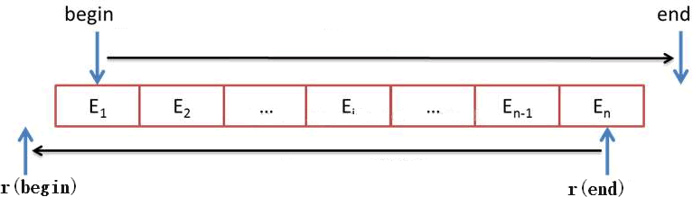
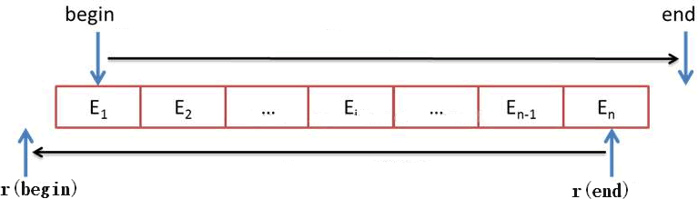

C++ STL 反向迭代器适配器（reverse_iterator）详解
我们知道，C++ 11 的 STL 标准库提供有 4 种迭代器适配器，本节开始将一一介绍它们的功能和用法，这里先讲解反向迭代器适配器。
反向迭代器适配器（reverse_iterator），可简称为反向迭代器或逆向迭代器，常用来对容器进行反向遍历，即从容器中存储的最后一个元素开始，一直遍历到第一个元素。
值得一提的是，反向迭代器底层可以选用双向迭代器或者随机访问迭代器作为其基础迭代器。不仅如此，通过对 ++（递增）和 --（递减）运算符进行重载，使得：
另外，实现反向迭代器的模板类定义在 <iterator> 头文件，并位于 std 命名空间中。因此，在使用反向迭代器时，需包含如下语句：
1) 调用该类的默认构造方法，即可创建了一个不指向任何对象的反向迭代器，例如：
2) 当然，在创建反向迭代器的时候，我们可以直接将一个基础迭代器作为参数传递给新建的反向迭代器。例如：
也就是说，反向迭代器的指向和其底层基础迭代器的指向具有这样的关系，即反向迭代器的指向总是距离基础迭代器偏左 1 个位置；反之，基础迭代器的指向总是距离反向迭代器偏右 1 个位置处。它们的关系如图 1 所示。

图 1 反向迭代器和基础迭代器的关系
3) 除了第 2 种初始化方式之外，reverse_iterator 模板类还提供了一个复制（拷贝）构造函数，可以实现直接将一个反向迭代器复制给新建的反向迭代器。比如：
reverse_iterator模板类中，重载了如表 1 所示的这些运算符。
下面程序演示了表 1 中部分运算符的用法：
除此之外，reverse_iterator 模板类还提供了 base() 成员方法，该方法可以返回当前反向迭代器底层所使用的基础迭代器。举个例子：
反向迭代器适配器（reverse_iterator），可简称为反向迭代器或逆向迭代器，常用来对容器进行反向遍历，即从容器中存储的最后一个元素开始，一直遍历到第一个元素。
值得一提的是，反向迭代器底层可以选用双向迭代器或者随机访问迭代器作为其基础迭代器。不仅如此，通过对 ++（递增）和 --（递减）运算符进行重载，使得：
- 当反向迭代器执行 ++ 运算时，底层的基础迭代器实则在执行 -- 操作，意味着反向迭代器在反向遍历容器；
- 当反向迭代器执行 -- 运算时，底层的基础迭代器实则在执行 ++ 操作，意味着反向迭代器在正向遍历容器。
另外，实现反向迭代器的模板类定义在 <iterator> 头文件，并位于 std 命名空间中。因此，在使用反向迭代器时，需包含如下语句：
#include <iterator> using namespace std;
反向迭代器的模板类定义如下：注意，第二行代码不是必需的，但如果不用，则程序中只要创建该迭代器时，必须手动注明 std 命名空间（强烈建议初学者使用）。
template <class Iterator>
class reverse_iterator;
注意，Iterator 模板参数指的是模板类中所用的基础迭代器的类型，只能选择双向迭代器或者随机访问迭代器。
这意味着，如果想使用反向迭代器实现逆序遍历容器，则该容器的迭代器类型必须是双向迭代器或者随机访问迭代器。
C++ STL反向迭代器的创建
reverse_iterator 模板类中共提供了 3 种创建反向迭代器的方法，这里以 vector<int> 容器的随机访问迭代器作为基础迭代器为例。1) 调用该类的默认构造方法，即可创建了一个不指向任何对象的反向迭代器，例如：
std::reverse_iterator<std::vector<int>::iterator> my_reiter;由此，我们就创建好了一个没有指向任何对象的 my_reiter 反向迭代器。
2) 当然，在创建反向迭代器的时候，我们可以直接将一个基础迭代器作为参数传递给新建的反向迭代器。例如：
//创建并初始化一个 myvector 容器
std::vector<int> myvector{1,2,3,4,5};
//创建并初始化 my_reiter 迭代器
std::reverse_iterator<std::vector<int>::iterator> my_reiter(myvector.end());
我们知道，反向迭代器是通过操纵内部的基础迭代器实现逆向遍历的，但是反向迭代器的指向和底层基础迭代器的指向并不相同。以上面创建的 my_reiter 为例，其内部的基础迭代器指向的是 myvector 容器中元素 5 之后的位置，但是 my_reiter 指向的却是元素 5。也就是说，反向迭代器的指向和其底层基础迭代器的指向具有这样的关系，即反向迭代器的指向总是距离基础迭代器偏左 1 个位置；反之，基础迭代器的指向总是距离反向迭代器偏右 1 个位置处。它们的关系如图 1 所示。

图 1 反向迭代器和基础迭代器的关系
其中，begin 和 end 表示基础迭代器，r(begin) 和 r(end) 分别表示有 begin 和 end 获得的反向迭代器。
3) 除了第 2 种初始化方式之外，reverse_iterator 模板类还提供了一个复制（拷贝）构造函数，可以实现直接将一个反向迭代器复制给新建的反向迭代器。比如：
//创建并初始化一个 vector 容器
std::vector<int> myvector{1,2,3,4,5};
//调用复制构造函数初始化反向迭代器的 2 种方式
std::reverse_iterator<std::vector<int>::iterator> my_reiter(myvector.rbegin());
//std::reverse_iterator<std::vector<int>::iterator> my_reiter = myvector.rbegin();
由此，my_reiter 反向迭代器指向的就是 myvector 容器中最后一个元素（也就是 5）之后的位置。C++ STL reverse_iterator模板类中的成员
前面在学习每一种容器时，都提供有大量的成员函数。但迭代器模板类不同，其内部更多的是对运算符的重载。reverse_iterator模板类中，重载了如表 1 所示的这些运算符。
| 重载运算符 | 功能 |
|---|---|
| operator* | 以引用的形式返回当前迭代器指向的元素。 |
| operator+ | 返回一个反向迭代器，其指向距离当前指向的元素之后 n 个位置的元素。此操作要求基础迭代器为随机访问迭代器。 |
| operator++ | 重载前置 ++ 和后置 ++ 运算符。 |
| operator+= | 当前反向迭代器前进 n 个位置，此操作要求基础迭代器为随机访问迭代器。 |
| operator- | 返回一个反向迭代器，其指向距离当前指向的元素之前 n 个位置的元素。此操作要求基础迭代器为随机访问迭代器。 |
| operator-- | 重载前置 -- 和后置 -- 运算符。 |
| operator-= | 当前反向迭代器后退 n 个位置，此操作要求基础迭代器为随机访问迭代器。 |
| operator-> | 返回一个指针，其指向当前迭代器指向的元素。 |
| operator[n] | 访问和当前反向迭代器相距 n 个位置处的元素。 |
下面程序演示了表 1 中部分运算符的用法：
#include <iostream>
#include <iterator>
#include <vector>
using namespace std;
int main() {
//创建并初始化一个 vector 容器
std::vector<int> myvector{ 1,2,3,4,5,6,7,8 };
//创建并初始化一个反向迭代器
std::reverse_iterator<std::vector<int>::iterator> my_reiter(myvector.rbegin());//指向 8
cout << *my_reiter << endl;// 8
cout << *(my_reiter + 3) << endl;// 5
cout << *(++my_reiter) << endl;// 7
cout << my_reiter[4] << endl;// 3
return 0;
}
程序执行结果为：
8
5
7
3
- 通过重载的 * 运算符，输出其指向的元素 8；
- 通过重载的 + 运算符，输出了距离当前指向位置为 3 的元素 5；
- 通过重载的前置 ++ 运算符，将反向迭代器前移了 1 位，即指向了元素 7，并将其输出；
- 通过重载的 [ ] 运算符，输出了距离当前位置为 4 的元素 3。
除此之外，reverse_iterator 模板类还提供了 base() 成员方法，该方法可以返回当前反向迭代器底层所使用的基础迭代器。举个例子：
#include <iostream>
#include <iterator>
#include <vector>
using namespace std;
int main() {
//创建并初始化一个 vector 容器
std::vector<int> myvector{ 1,2,3,4,5,6,7,8 };
//创建并初始化反向迭代器 begin，其指向元素 1 之前的位置
std::reverse_iterator<std::vector<int>::iterator> begin(myvector.begin());
//创建并初始化反向迭代器 begin，其指向元素 8
std::reverse_iterator<std::vector<int>::iterator> end(myvector.end());
//begin底层基础迭代器指向元素 1，end底层基础迭代器指向元素 8 之后的位置
for (auto iter = begin.base(); iter != end.base(); ++iter) {
std::cout << *iter << ' ';
}
return 0;
}
程序执行结果为：
1 2 3 4 5 6 7 8
注意程序中第 13 行代码，begin 和 end 都是反向迭代器，通过调用 base() 成员方法，可以获取各自底层对应的基础迭代器。由于基础迭代器类型为随机访问迭代器，因此其 ++ 操作实现的就是普通意义上的正向遍历。关注公众号「站长严长生」，在手机上阅读所有教程，随时随地都能学习。内含一款搜索神器，免费下载全网书籍和视频。

微信扫码关注公众号